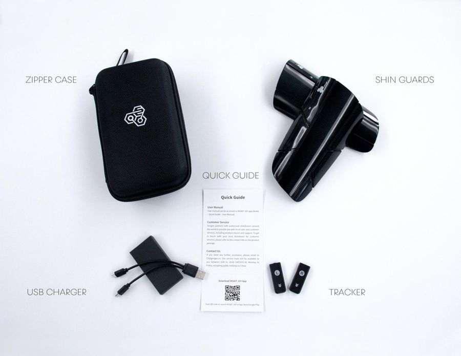

Sports TechnologyTechnologie sportiveTeknolojia ya Michezo
INSAIT JOY Smart Shin Guards
A small sensor sits in each shin guard and records every run, touch and kick in training and matches. The report is ready on a phone after the session.Un petit capteur dans chaque protège-tibia enregistre chaque course, touche et frappe à l'entraînement et en match. Le rapport est prêt sur téléphone après la séance.Kihisi kidogo ndani ya kila kilinda-muundi kinarekodi kila mbio, mguso na teke mazoezini na kwenye mechi. Ripoti iko tayari kwenye simu baada ya kipindi.
- What the coach seesCe que voit l'entraîneurKocha anachoona
- Distance and distance per minute · high-speed and sprint distance · high-speed runs and top speed · acceleration and sharp turns · jumps · left and right foot use · kick powerDistance et distance par minute · distance à haute intensité et en sprint · courses rapides et vitesse max · accélération et changements de direction · sauts · usage du pied gauche et droit · puissance de frappeUmbali na umbali kwa dakika · umbali wa kasi ya juu na wa mbio za kasi · mbio za kasi na kasi ya juu kabisa · kuongeza kasi na kugeuka ghafla · kuruka · matumizi ya mguu wa kushoto na wa kulia · nguvu ya teke
- Who it suitsPour quiInafaa kwa nani
- Youth and senior players, academies and schools. Available in Kenya, Tanzania, Uganda and Rwanda, and elsewhere in Africa on request.Joueurs jeunes et seniors, académies et écoles. Disponible au Kenya, en Tanzanie, en Ouganda et au Rwanda, et ailleurs en Afrique sur demande.Wachezaji vijana na wakubwa, akademia na shule. Inapatikana Kenya, Tanzania, Uganda na Rwanda, na kwingineko Afrika kwa ombi.